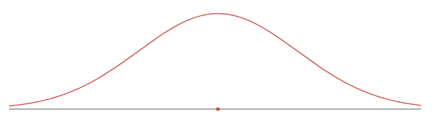

2.4 Normal Distribution Worksheet
Objective 4: By the end of this unit, students will be able to:
- Understand the notion and characteristics of continuous probability distributions.
- Use the normal distribution to model continuous random variables.
Review on Normal Distribution
Normal Distribution Facts
- It is a continuous random variable distribution over \((-\infty, \infty)\).
- Its probability density curve is symmetric bell-shaped (unimodal).
- It is completely determined by the mean \(\mu\) and standard deviation \(\sigma\), denoted by \(N(\mu, \sigma)\).
- \(N(0, 1)\) is called the standard normal distribution.

Using R to compute cumulative probability for \(X \sim N(\mu, \sigma)\)
- For \(P(X < b) = P(X \leq b)\):
pnorm(b, \mu, \sigma) - For \(P(X > a) = P(X \geq a)\):
pnorm(a, \mu, \sigma, lower.tail = FALSE)or1 - pnorm(a, \mu, \sigma) - For \(P(a < X < b)\):
pnorm(b, \mu, \sigma) - pnorm(a, \mu, \sigma)or1 - (pnorm(a, \mu, \sigma) + pnorm(b, \mu, \sigma, lower.tail = FALSE)) - For \(Z \sim N(0, 1)\): the mean and SD can be omitted in 1)-3):
- \(P(Z < b)\):
pnorm(b)
- \(P(Z < b)\):

To Compute Inverse Cumulative Probability (Finding x for Given Cumulative Probability)
- Find \(x\) for \(P(X < x) = p\):
qnorm(p, \mu, \sigma) - Find \(x\) for \(P(X > x) = p\):
qnorm(1 - p, \mu, \sigma)orqnorm(p, \mu, \sigma, lower.tail = FALSE)

Z-score
- If \(X \sim N(\mu, \sigma)\), the z-score of x is computed by \(z = \frac{x - \mu}{\sigma}\).
- The z-score measures how many standard deviations of x from the mean.
- \(Z = \frac{X - \mu}{\sigma} \sim N(0, 1)\)
- \(X = \mu + Z \cdot \sigma\)
- \(x = \mu\) if \(z = 0\); \(x > \mu\) if \(z > 0\); \(x < \mu\) if \(z < 0\)
Empirical Rule (68-95-99.7 Rule)
For a nearly normally distributed data, the empirical rule predicts that:
- 68% of observations fall within the first standard deviation (\(\mu\) ± \(\sigma\)).
- 95% within the first two standard deviations (\(\mu\) ± 2\(\sigma\)).
- 99.7% within the first three standard deviations (\(\mu\) ± 3\(\sigma\)) of the mean.

Exercise 1 For \(Z \sim N(0, 1)\) (the standard normal distribution, the mean = 0, the standard deviation = 1), use R to find the probability and sketch the region that represents the probability.
(a). \(P(Z < -1.5)\) (b). \(P(Z > 1.75)\) (c). \(P(-1.5 < Z < 1.75)\) (d). \(P(|Z| < 2.5)\) (e). \(P(Z > 1)\)
Exercise 2 For \(X \sim N(-3, 2)\) (the normal distribution, the mean = -3, the standard deviation = 2), use R to find the probability and sketch the region that represents the probability.
- \(P(X < -3.25)\)
- \(P(X > 1.75)\)
- \(P(-3.25 < X < -1.25)\)
Exercise 3 For \(X \sim N(-3, 2)\), compute the z-score of the given x:
- \(x = -3.25\)
- \(x = -3\)
- \(x = -1.25\)
Exercise 4
(a). State the Empirical Rule.
(b). Use R to verify the Empirical Rule: find \(P(|Z| < 1)\), \(P(|Z| < 2)\), \(P(|Z| < 3)\).
Exercise 5
The scores on a college entrance exam follow a normal distribution with a mean of 50 and standard deviation of 10. Find the probability that a student will score:
(a). Over 65
(b). Less than 25
(c). Between 33 and 68
Exercise 6
The scores on a college entrance exam follow a normal distribution with a mean of 50 and standard deviation of 10.
(a). What is the cut off score of the lowest 20%? (Round to 1 decimal)
(b). What is the cut off score of the highest 10%? (Round to 1 decimal)
Exercise 7
The hours of sleep of college students fits a normal distribution with mean of 7.2 hours and standard deviation of 1.3 hours. Find the (standardized) z-score corresponding to 6.5 hours.
Exercise 8
John scored a 92 on a test with a mean of 88 and a standard deviation of 2.7. Jessica scored an 86 on a test with a mean of 82 and a standard deviation of 1.8. Find the Z-scores for John’s and Jessica’s test scores and use them to determine who did better on their test relativ*e to their class.
Exercise 9
The score data of the verbal portion of the Graduate Record Examination (GRE) is approximately normally distributed with a mean of 462 points and a standard deviation of 119 points. Fill in the following blanks: approximately
(a) 68% of students who took the verbal portion of the GRE scored between _______ and ________
(b) 95% of students who took the verbal portion of the GRE scored between ______ and ________
(c) 99.7% of students who took the verbal portion of the GRE scored between ______ and ________